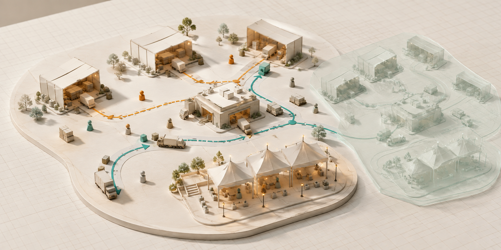
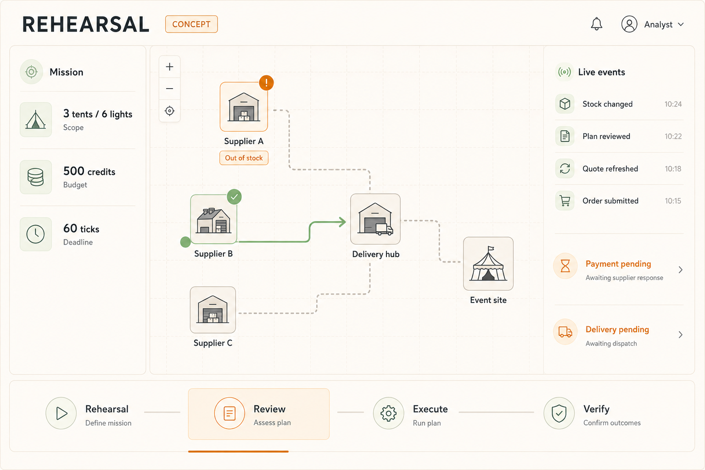

목표와 한도를 정한다
필요한 물품, 예산, 기한을 선언하고 성공 조건을 코드로 고정합니다.
실시간으로 변하는 거래 세계에서 에이전트가 먼저 시도하고, 서로 검토하고, 다시 실행합니다. 그 결과를 독립된 상거래 환경으로 옮겨 어디까지 맡길 수 있는지 근거를 만듭니다.

CUSTOM TRANSACTION WORLD / CONCEPT VISUAL정상 주문 한 번으로는 답하기 어렵습니다. 가격이 바뀌고, 결제 응답이 사라지고, 배송 이벤트가 뒤늦게 올 때도 목표를 지키는지 확인해야 합니다. 사람이 반복하던 검증을 실행 가능한 시나리오와 증거로 남깁니다.
필요한 물품, 예산, 기한을 선언하고 성공 조건을 코드로 고정합니다.
현재 세계를 복제해 재고 부족과 통신 실패를 주입하고 결과를 비교합니다.
검토자는 실행 로그로 허점을 찾습니다. 합의만으로 실행을 허용하지 않습니다.
수정한 정책을 고정한 뒤 독립 상거래 백엔드의 원장과 수령 상태로 판정합니다.
첫 임무는 ‘행사 준비 마을’입니다. 공급처에서 물품을 조달해 행사장까지 보내는 하나의 목표로 구매·지급·배송·재계획을 끝까지 연결합니다.
세 공급처 · 배송 허브 · 행사장 / 아래 수치는 설계용 합성 조건
재고와 가격이 변하고, 다른 구매자가 주문하며, 배송 시간이 흐릅니다. 낡은 견적으로 주문하려 하면 상태를 다시 확인해야 합니다.
운영 세계는 계속 진행합니다. 연습 세계는 별도 원장으로 복제해 시간을 가속하며, 연습 주문이 운영 잔액을 바꾸지 않게 합니다.
건물 6곳, 이동 경로, 상태 표시, 이벤트 기록을 만듭니다. 시각적 사실감보다 재고 경합·지급 미확정·중복 이벤트를 정확히 다루는 데 집중합니다.
초기 1 tick = 1초를 가정하되 모델 지연을 측정한 후 평가 전에 기한을 고정합니다. 실시간 반영 목표와 모델 응답 시간은 따로 측정합니다.
아래 네 장면을 눌러 제안하는 사용자 경험을 확인하세요. 하나의 성공 장면 대신, 중간 실패와 복구 판단을 함께 드러냅니다.
구매자는 공급처의 견적을 조회합니다. 아직 지급하거나 수령한 물품은 없습니다. 성공은 주문 요청이 아니라 예산과 기한 안의 최종 수령으로 정의합니다.
왼쪽에는 목표와 한도, 가운데에는 움직이는 세계, 오른쪽에는 변경 기록을 배치합니다. 운영자는 에이전트의 설명과 실제 거래 상태를 함께 확인합니다.

설득력의 핵심은 독립성입니다. 연습에 쓰지 않은 사건을 통과하고, 자체 시뮬레이터와 별도로 구현된 상거래 시스템에서도 같은 정책을 검증해야 합니다.
재고 변경과 응답 유실을 반복 주입합니다. 실패 로그를 보고 실행 정책과 매개변수를 수정합니다.
새 seed·사건 조합·공급 조건을 사용합니다. 평가 중 정답에 맞춰 정책을 고치지 않습니다.
독립 설치한 Medusa core의 API에서 주문·지급 상태를 다룹니다. 서버 기동은 확인했으며, 거래 계약과 정책 전이는 개발 단계에서 검증합니다.
자체 세계에서 개선한 실행 정책이 독립된 테스트 환경에서도 목표 달성, 중복 지급 방지, 예외 복구에 도움이 되는지 확인합니다.
실자금 안전성, 규제 준수, 모든 가맹점으로의 일반화는 입증하지 않습니다. E3 결제사 공식 sandbox는 확장 후보이며, 카드 테스트는 스테이블코인 결제의 증거가 아닙니다.
Peer Review는 근거를 강화하는 실험 변수입니다. 예산·재고·중복 처리 같은 필수 조건은 코드로 강제하고, 최종 판정은 별도 검증기가 수행합니다.
SSE 기반 이벤트 전달을 설계합니다. 이벤트 ID와 재개 커서, 중복 제거, 재연결 후 스냅샷 대조로 상태를 복구합니다. 외부 이벤트의 지연·순서 역전도 시나리오에 포함합니다.
“응답 유실 시 같은 거래를 조회한다”처럼 실행 규칙을 명시적으로 수정합니다. 모델 가중치를 학습하는 강화학습으로 주장하지 않으며, 매 tick마다 모델을 호출하지 않습니다.
모든 방식에 같은 예산·재고·중복 방지 제약을 적용합니다. 성공한 실행만 고르지 않고, 반복 실험과 토론에 쓴 비용까지 포함해 비교합니다.
| 조건 | 실행 방식 | 확인할 질문 |
|---|---|---|
| B0 | 고정 규칙 | 이 문제가 단순한 규칙만으로 충분히 풀리는가? |
| B1 | 단일 Strands 에이전트 | 계획과 도구 사용이 규칙 대비 어떤 이점을 주는가? |
| B2 | 단일 에이전트 + 시뮬레이션 | 사전 반복 수행이 실행 결과를 개선하는가? |
| B3 | 시뮬레이션 + Peer Review | 검토자가 비용에 비례하는 추가 개선을 만드는가? |
견적 후 재고·가격 변경, 지급 기록 후 응답 유실, 배송 이벤트 중복·지연·역전, 부분 조달, 판매자 프롬프트 주입, 달성 불가능한 목표를 시험합니다.
목표 달성, 예산 위반, 중복 지급, 미확정 금액, 복구·사람 개입, 총 시간·모델 비용을 기록합니다. 규칙 방식이 더 좋으면 그 결과도 그대로 남깁니다.
설계 목표: 파일럿 5개 사례 × 4조건 → 본 평가 20개 사례 × 4조건. 외부 전이는 B1/B3부터 비용 한도 내 비교합니다. 실험은 아직 수행하지 않았으며 성공률·지연·절감 수치는 없습니다.
“어떤 반례가 계획을 바꿨고,
그 변경이 다른 환경에서도 도움이 되었는가?”
가장 먼저 독립 상거래 API의 상태와 실패 계약을 확인합니다. 그 계약에 맞춰 작은 세계를 만들고, 5분 이내 데모에서 변화·복구·외부 검증을 연결합니다.
Medusa core 최소 주문·지급 흐름과 자원 요구를 확인합니다. 연결 실패 시 전이 주장 범위를 줄입니다.
원장·재고·시계, 구매자·검토자와 반복 실험을 연결합니다. 정책 버전을 고정할 준비를 합니다.
이벤트 복구·재계획과 독립 상거래 어댑터를 연결합니다. 미공개 조건에서 비교군을 평가합니다.
미공개 사례와 외부 실행을 비교합니다. 영어 데모·재현 절차·전체 실패 기록을 정리합니다.
Strands 도구 실행, 일관된 사용자 흐름, 개발자 검증 업무의 효용, 정책 개선과 독립 평가를 연결합니다. 4분 45초 데모의 마지막은 실제 원장과 비교 결과로 마무리합니다.
공식 규칙에 따라 공개 데모·AgentCore 배포를 검토합니다. Builder Center 글은 실제 구현과 결과를 근거로 작성하며, 배포·게시되지 않은 계획을 성과로 세지 않습니다.
거래와 에이전트 구현은 조사했지만 설치·실행은 미검증입니다. 이 POC는 실험 제어와 독립 검증에 필요한 작은 세계를 직접 만드는 방향을 우선합니다.
첫 고객 가설은 거래 에이전트 개발팀입니다. 장기적으로 어댑터 연결 후 시나리오·회귀 평가·증거 보고를 제공하되, 이번 POC에서 고객 수요나 사업성을 입증했다고 주장하지 않습니다.
현재 완료: 조사·기획·화면 콘셉트, HTML 설명용 프로토타입과 로컬 개발 기반. Medusa 설치·마이그레이션·health 확인. 미완료: 세계 엔진, 모델 실행, 외부 거래 연결, 성능 평가. Rehearsal은 기획용 가칭입니다.
Agents for Humans 공식 규칙 — Strands, 제출 형식, 심사 기준과 마감.
Strands Graph — 다중 에이전트 흐름 구성 근거.
Medusa payment flow — 외부 주문·지급 상태 설계 참고.
NIST 디지털 트윈 신뢰성 검토 — 모델의 타당성과 적용 범위 구분.
Multiagent Debate 연구 — Peer Review 실험 동기. 본 POC의 효과를 보장하지 않음.
OpenMMO 고정 버전 라이선스 — 활용·제출 경로 별도 검토 대상.